Depicting Women
By Ayla Tanurhan ('20)
This past year, I explored the female experience. As I am growing up and becoming an adult and a woman, I wanted to
reevaluate my relationship with my femininity and how that relationship has been affected by the depiction of women in
the media I consume. Prior to the shelter in place, I wanted to focus on the depiction of women in art, but when I
switched from making Cyanotypes to sewing, my focus shifted to the modern depiction of women in media like film. My
pre-quarantine work explores the emphasis on sexuality within art’s history, and how this depiction has developed over
time and influenced the way women are presented in media today. My post-quarantine work is inspired by the concept of
the Manic Pixie Dream Girl. I wanted to create a closet for an individual woman, full of personalities that played into
the fantasies of men. Both of these projects remain unfinished due to the current circumstances, but I hope that you
contemplate the nuances of female depiction in the media as you view the following work.
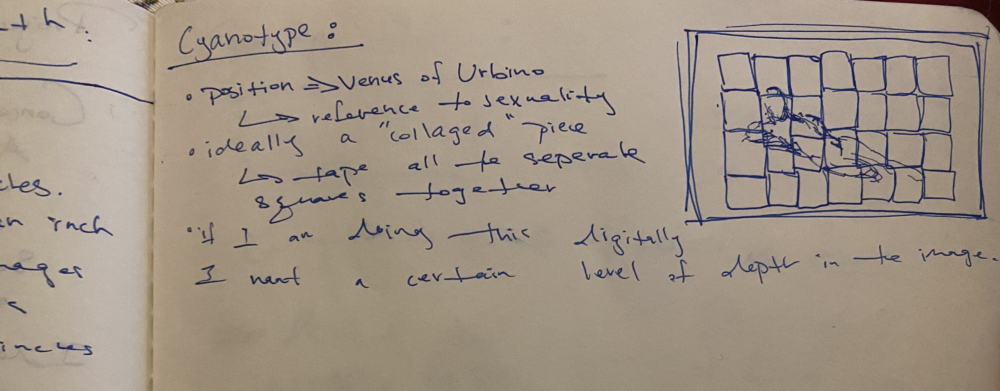
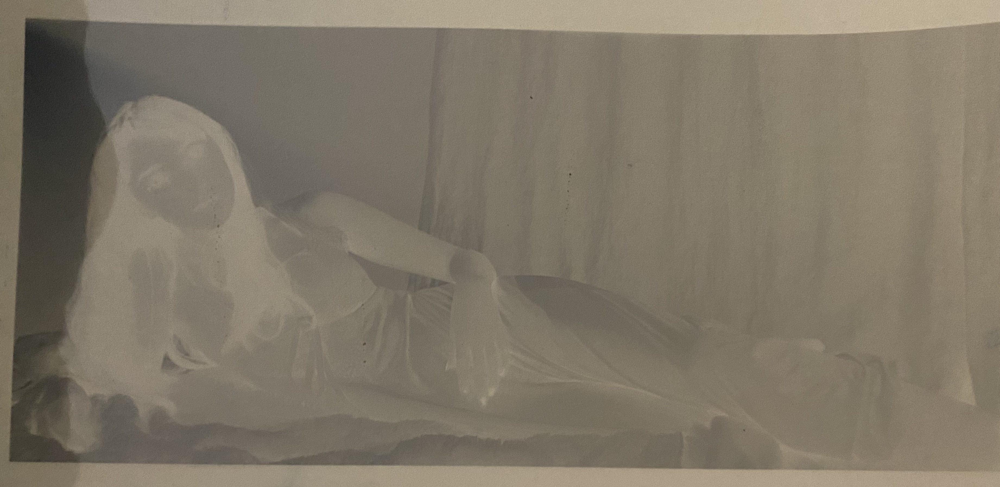
Initially, I wanted to create a large image of a reclining female subject made up of many small images, like a puzzle.
These images would all have slightly different exposures, creating varying shades of blue. Above you can see my
preliminary notes and the negative used to make my tests.
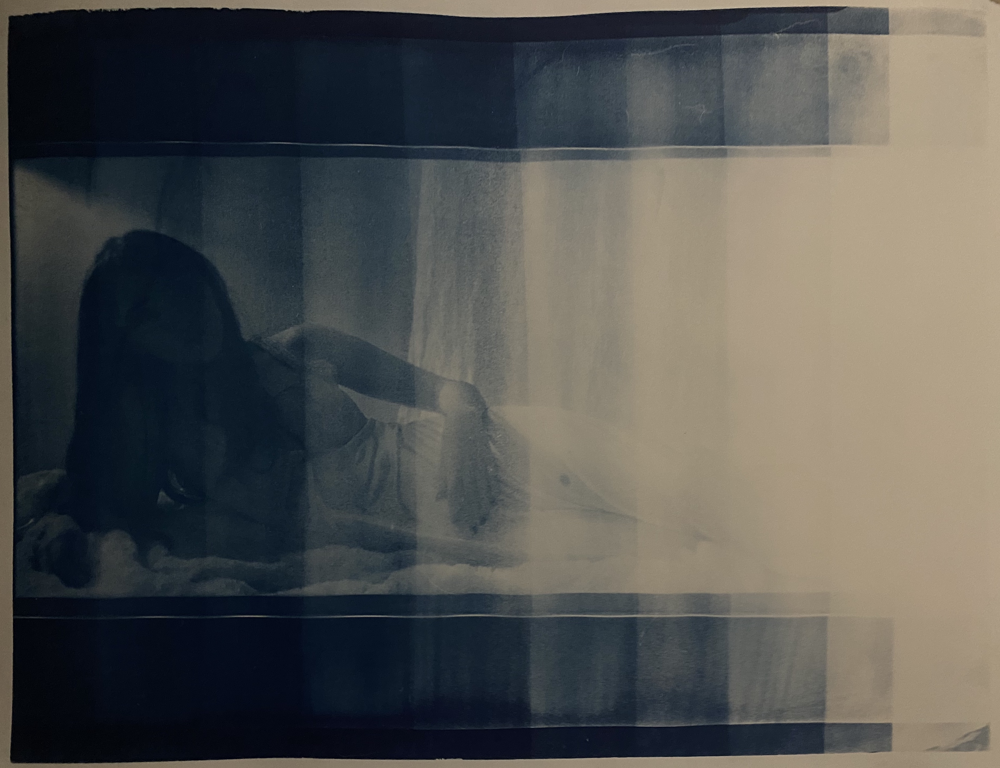
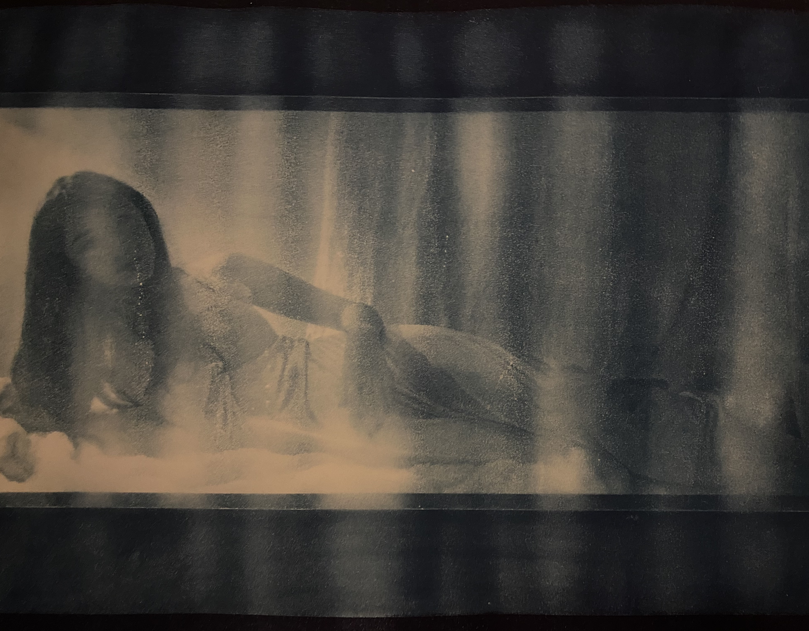
Right before quarantine, I was entering the testing phase of my exploration. The first image is an exposure time test.
Cyanotype pieces are made by applying a light sensitive substance to a piece of paper, placing a negative on that paper,
and then allowing the image to develop in the sun. The amount of time spent in the sun changes the exposure, and here is
a test made in increments of 2 minutes where the first rectangle had an exposure of 20 minutes and the last an exposure
of 2 minutes. The second image is a test image with a 15 minute exposure time that went wrong. Below is my best test
image. When you see this image, imagine it made up of 25 smaller images with a total size of 1.7 by 4.5 feet.
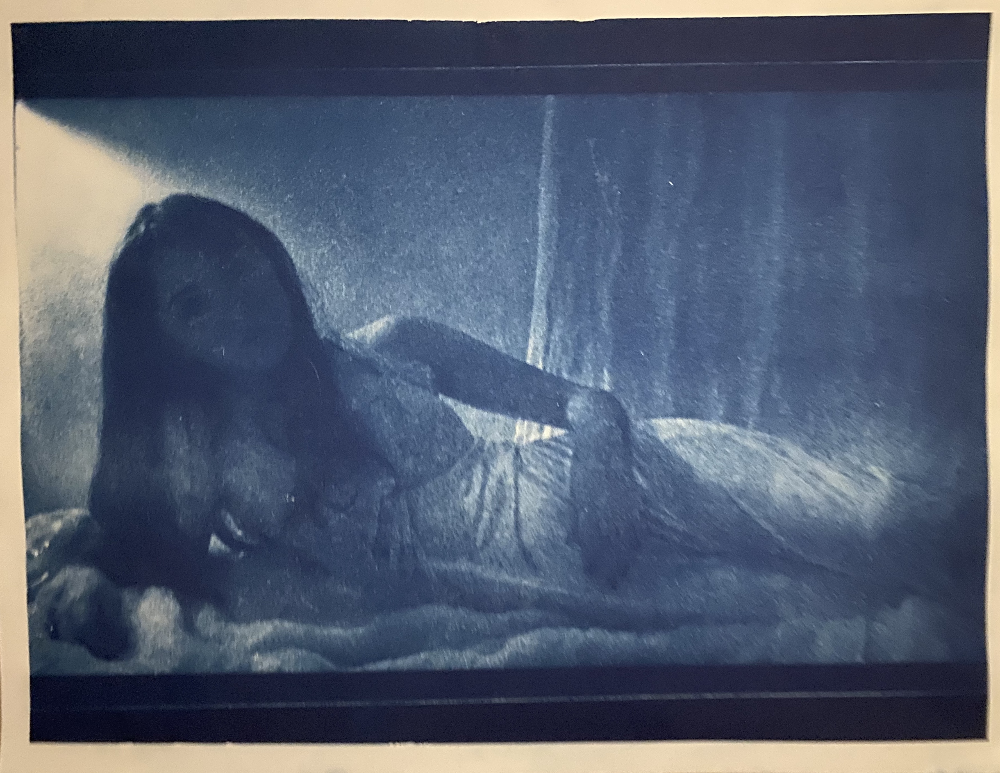
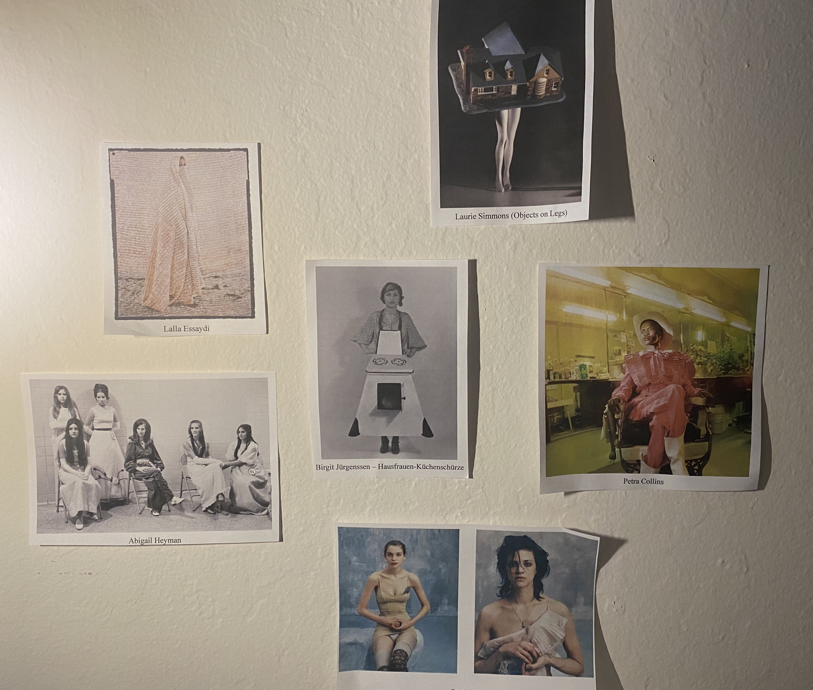
Here are some of the artists who inspired me to switch my focus to sewing. As sewing is a new medium for me, I have been
simultaneously teaching myself how to sew and attempting to create pieces.
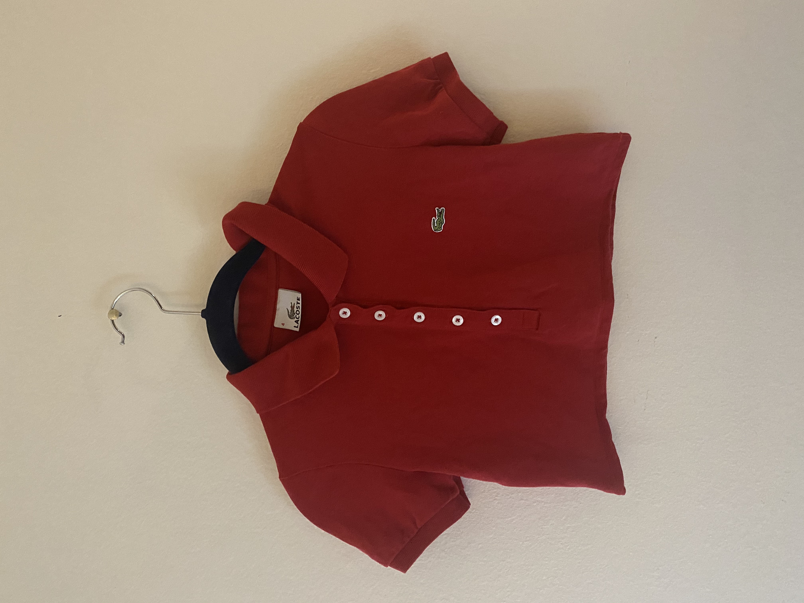
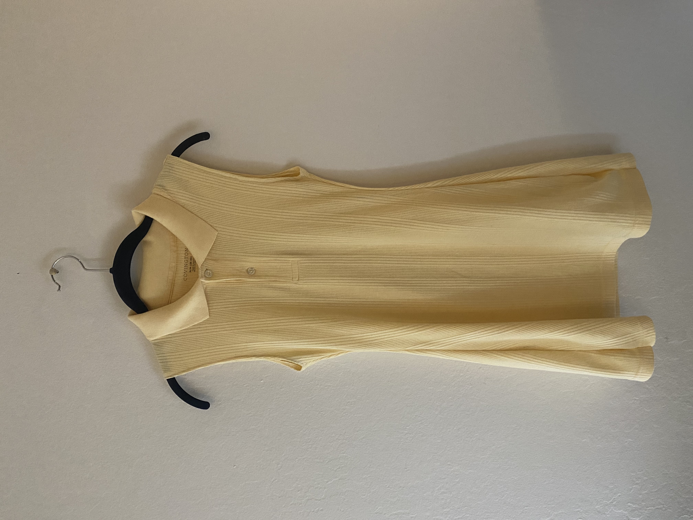
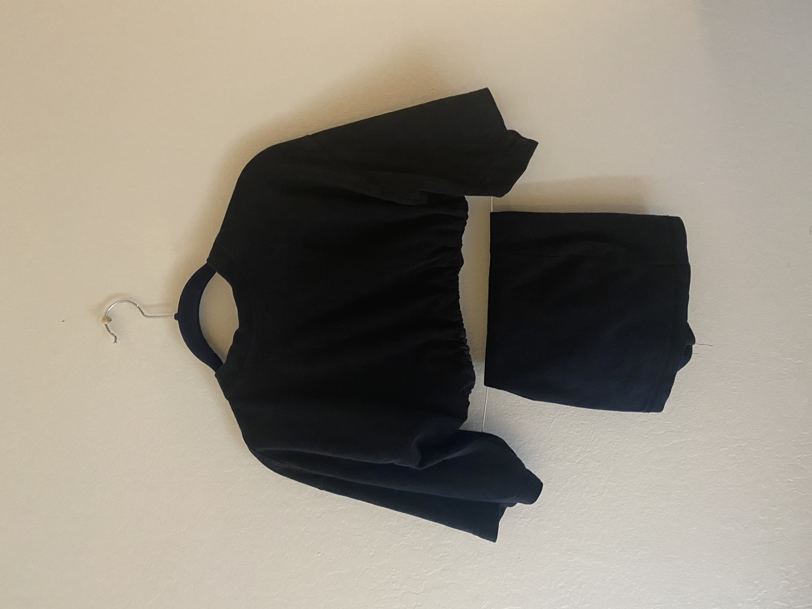
I used two main methods in creating my clothing. The three pieces above are all from my upcycling method. I began this
process by upcycling clothing because it required less constructing and allowed me to work on developing some basic
sewing skills.
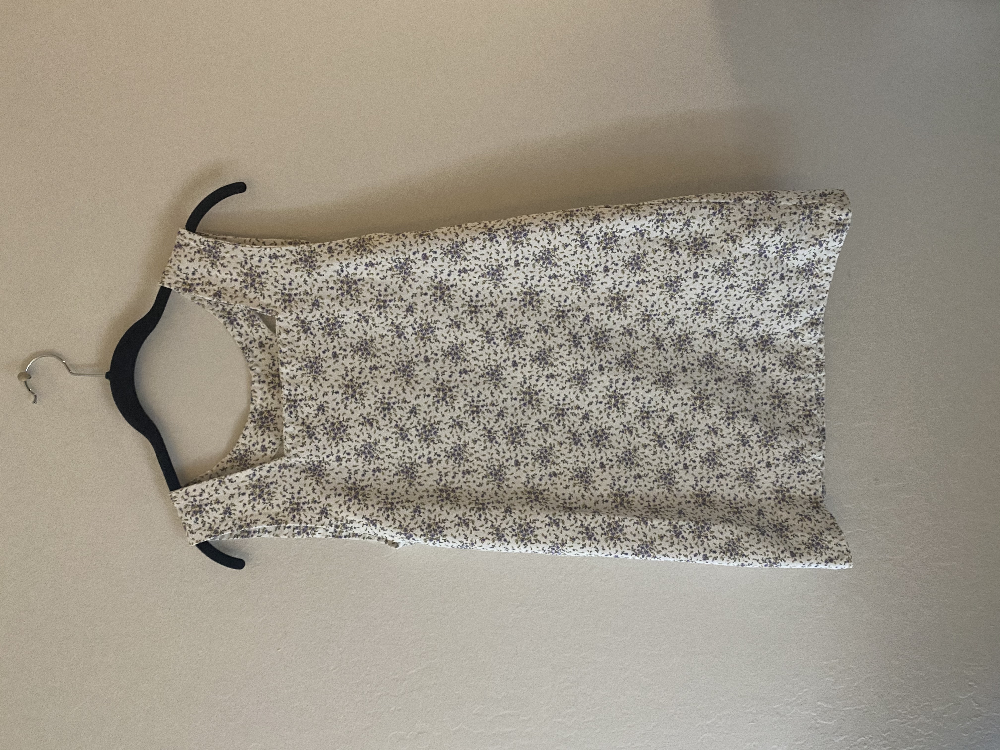
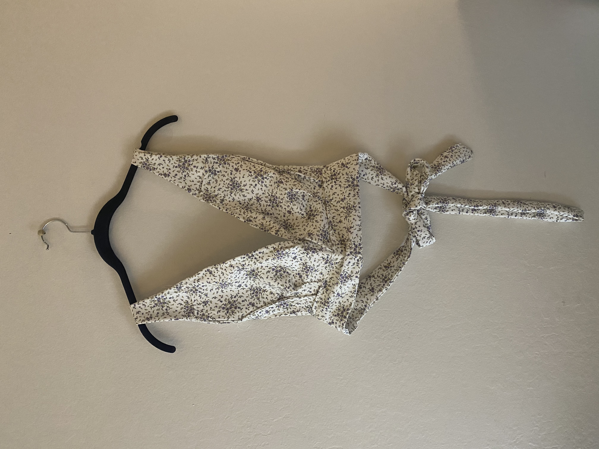
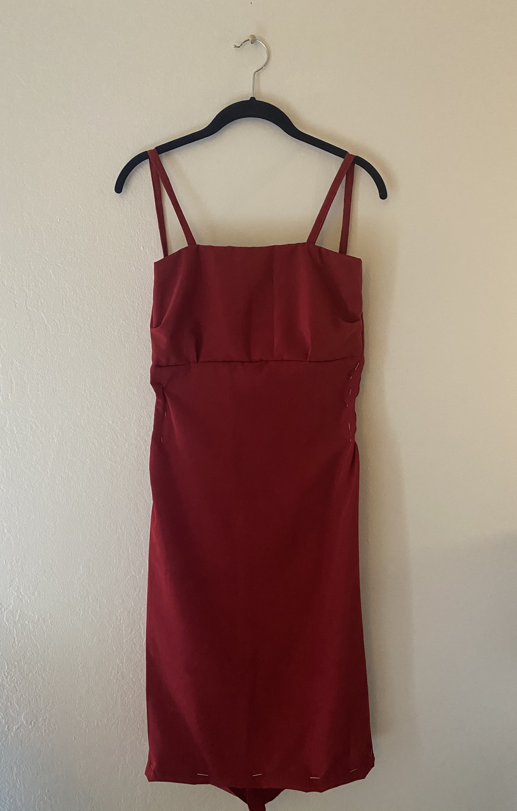
These next three pieces are all items I constructed myself. The first was made with a pattern, and the second two were
made through trial and error. The last dress remains unfinished. Below is the first and only image within my
post-quarantine exploration. This is the first personality and outfit in the closet of male fantasies, and I hope to
continue filling up this closet.